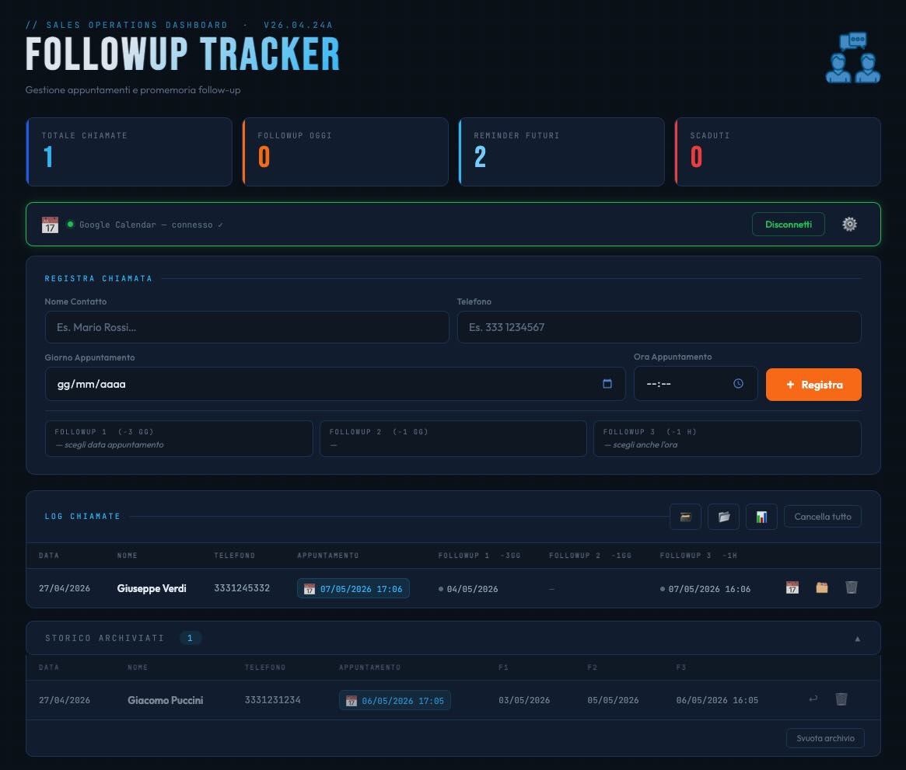

-
Via Per Via
Progetto scolastico in fase di lancio.
-
Followup-Tracker
Gestione appuntamenti e promemoria followup con integrazione Google Calendar (link su richiesta).

-
PDF/A-nalyzer
Per una semplice analisi dichiarativa della conformità di uno o più PDF/A
-
Parole Nascoste
Perché non si sa mai cosa nascondono...
-
Gli Amici del 10
Versione html di un progettino python per ripassare gli amici del 10 in classe.
-
Ripassiamo le tabelline
Versione html di un progettino python per ripassare le tabelline in classe.
-
Sbobinare un audio
Ideazione, redazione testi, grafiche e montaggio. Speaker in sintesi vocale.
-
Contributi video in classe
Ideazione, redazione testi, grafiche e montaggio. Speaker in sintesi vocale.
-
Divisioni con i Multipli e carico cognitivo
Ideazione, redazione testi, grafiche e montaggio. Speaker in sintesi vocale.
-
Ricerche testuali in un PDF
Ideazione, redazione testi, grafiche e montaggio. Speaker in sintesi vocale.
-
Book to PDF
Ideazione, redazione testi, grafiche e montaggio. Speaker in sintesi vocale.
-
Tangram Stories in Stop Motion
-
La Piantina degli Auguri Natalizi
Elaborato finale di un corso sulla programmazione in Python.
-
Presentazione al termine dell'anno di prova
Mi è servita come presentazione d'appoggio per l'esame orale al termine dell'anno di prova in vista dell'immissione in ruolo. Risulta muta in molte parti proprio perché ci parlavo sopra.
-
La ciclovia Destra-Po in Stop Motion
Ideazione, redazione testi, riprese (non in esterni) e montaggio.
-
Filastrocca di Carnevale - Partitura iconica
Montaggio e animazione
-
Body Percussion - Natale 2020
Riprese e montaggio
-
Vivaldi - Inverno
Foto e preparazione dei disegni dei bambini. Allestimento grafico fotorealistico per una presentazione che ha accompagnato un'esecuzione live de "Le Quattro Stagioni" di Vivaldi.
-
Video per Open Day 2020 - Primaria di Jolanda di Savoia
Rendering Google Earth e montaggio.
-
Assalto al treno - Stop Motion
Just for fun.
-
S-Rotolo
-
Questo sito web
Eh sì, perché la sfida è stata fare il tutto con puro HTML ♥ CSS, senza usare codice
JavaScript.